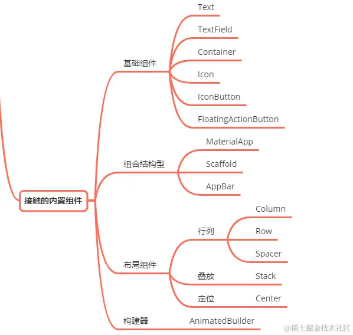

- 01 前言-教程内容导读.md.html
- 02 Flutter 开发环境的搭建.md.html
- 03 新手村基础 Dart 语法 (上).md.html
- 04 新手村基础 Dart 语法 (下).md.html
- 05 Flutter 计数器项目解读.md.html
- 06 猜数字界面交互与需求分析.md.html
- 07 使用组件构建静态界面.md.html
- 08 状态数据与界面更新.md.html
- 09 校验结果与提示信息.md.html
- 10 动画使用与状态周期.md.html
- 11 猜数字整理与总结.md.html
- 12 电子木鱼界面交互与需求分析.md.html
- 13 电子木鱼静态界面构建.md.html
- 14 计数变化与音效播放.md.html
- 15 弹出选项与切换状态.md.html
- 16 用滑动列表展示记录.md.html
- 17 电子木鱼整理与总结.md.html
- 18 白板绘制界面交互与需求分析.md.html
- 19 认识自定义绘制组件.md.html
- 20 通过手势在白板上绘制.md.html
- 21 白板画笔的参数设置.md.html
- 22 撤销功能与画板优化.md.html
- 23 应用界面整合.md.html
- 24 数据的持久化存储.md.html
- 25 网络数据的访问.md.html
- 26 教程总结与展望.md.html
- 捐赠
06 猜数字界面交互与需求分析
1. 界面交互介绍
猜数字是本教程的第一个案例，功能比较简单，非常适合新手朋友入门学习。下面是两个最基础的交互：
- 点击按钮生成 0~99 的随机数，并将随机数密文隐藏。
- 头部的输入框，点击时弹出软键盘，可输入猜测的数字。
| 点击生成随机数 | 可输入文字 |
|---|---|
如下所示，点击右上角的运行按钮，可以比较输入猜测值和生成值的大小，并在界面上通过两个色块进行提示。每次比较时，提示面板中的文字会有动画的变化，给出交互示意。
| 比较结果：小了 | 比较结果：大了 |
|---|---|
这三个交互就是本案例的所有功能需求。你可以找几个朋友一起玩这个猜数字的小游戏，比如随机生成一个数后，每人输入一个数，最后猜中的人获取胜利。其中控制猜测的范围，使其更利于自己猜出结果，也是一点斗智斗勇。
2. 猜数字需求分析
现在从数据和界面的角度，来分析一下猜数字中的需求：
- 随机数的生成
随机数生成的需求中，有两个需要变化的数据，其一是待猜测的数字 _value 的赋值；其二是游戏的状态 _guessing 置为 true。
int _value = 0;
bool _guessing = false;
对于界面来说，当生成随机数后，要禁用按钮。也就是说按钮的表现形式，会受到 _guessing 数据的限制。
同样，中间数字的显示也会受到 _guessing 的影响，猜测过程中为密文；猜对之后游戏结束，展示明文数字。
| 游戏进行中 | 游戏结束 |
|---|---|
- 输入框的输入功能
输入框输入需求中，需要一个数据来记录输入的内容。一般使用 TextEditingController 类型的数据和输入框进行双向绑定：也就是说用户的输入会导致控制器数值的变化，控制器数值的修改也会导致输入框内容的变化。
TextEditingController _guessCtrl = TextEditingController();
- 猜测需求分析
猜测需求中，需要一个数据表示猜测结果；猜测结果有三种：大了、小了和相等，这里使用一个可空的 bool 类型对象 _isBig 表示三种状态:
bool? _isBig;
null: 相等
true: 大了
false: 小了
对于界面来说，需要根据 _isBig 的值，给出提示信息。其中 大了和小了的展示面板叠放在主题界面之上，占据一般的高度空间：
| 大了 | 小了 | 相等 |
|---|---|---|
需求中的功能和数据这里简单地分析了一下，最后来说一下本案例中蕴含的知识点。
3. 猜数字中的知识点
首先，猜数字项目会接触到如下的常用组件，大家再完成猜数字项目的同时，也会了解这些组件的使用方式。

另外，会对 Flutter 中的界面相关的知识有初步的认知：
- 组件与界面的关系
- 界面构建逻辑的封装
- 状态数据与界面更新
- 组件有无状态的差异性
最后，在逻辑处理的过程中，是对 Dart 语法使用练习的好机会，在完成需求的过程中，会收获一些技能点。
- 回调函数的使用
- 动画控制器的使用
- 随机数的使用
界面交互和需求分析就到这里，下面一起开始第一个小项目的学习吧！
© 2019 - 2023 Liangliang Lee. Powered by gin and hexo-theme-book.